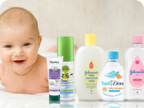
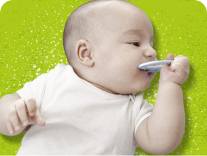
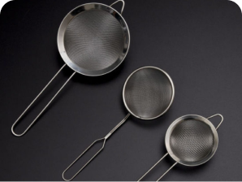
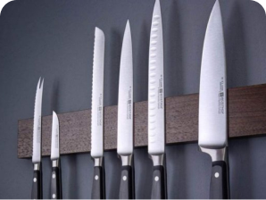
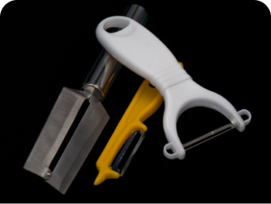

Step 1 : Niche Products

Baby Products
Baby Carriers
Your little one was carried for 9 long months in the womb. While
that may sometimes have been a challenge for the person
doing...see more
Baby Diapers
Diaper changing might seem complicated at first. But with a little
practice, you'll find that keeping your baby clean and dry is
easy.

Baby Skin Care
Your newborn's skin is so sensitive. Don't worry - rashes are common
during baby's first year. Learn how to keep your baby's
skin...see more
Bottle Feeding
The practice of feeding an infant a substitute for breast milk.
Pediatricians generally advise exclusively breastfeeding for all
full-term, healthy infants for the first 6 months of
life...see more
Baby Monitors
Electronic device consisting of a one-way radio or video transmitter
with a portable receiver for remotely listening to or
observing...see more

Baby Teethers
A teether, teething toy, or chew toy is a device given to teething
infants. Most modern teethers are silicone, but can
also...see more
Kitchen Tools

Food Stainers
A kitchen device that is most used to strain liquids away from other
ingredients but also to ocassionally sift fine
ingredients...see more

Kitchen Knives
A kitchen knife is any knife that is intended to be used in food
preparation. ... Kitchen knives can be made from several different
materials...see more

Peelers
A peeler is a kitchen tool consisting of a metal blade with a slot
with a sharp edge attached to a handle, used to remove...see
more
Step 2 : Get Hosting & Domain
// Step 2 : Get Hosting & Domain Content